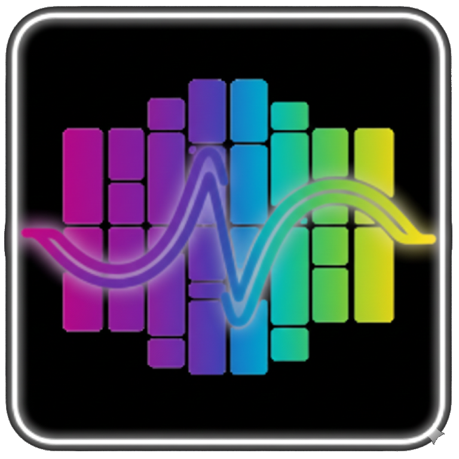

Warming up the forge…
Your local Ace Forge is starting.
Preparing audio cauldrons…
First launch can take a while (installing Python packages).
If this screen hangs for a long time, check the Terminal window for errors.
Note: After first-time bootup, you will need to download the ACE-Step models (7+ GB).